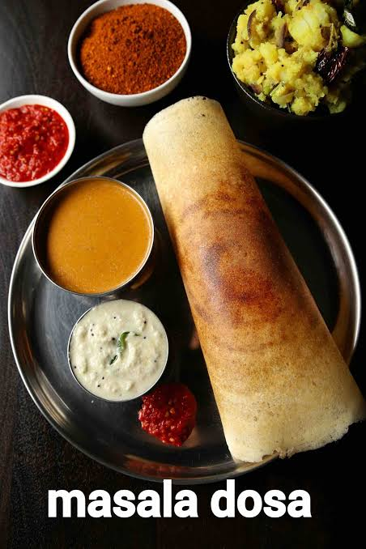

Dosa Recipe
This is How you make Dosa kids
Ingredients Needed
- The Batter: 2 cups readymade Dosa batter (bring it to room temperature)
- Cooking: 2–3 tbsp oil or ghee (for crisping)
- Optional Finish: A dollop of butter or a sprinkle of podi (gunpowder spice)
Instructions
-
Heat the Pan
Place a non-stick or well-seasoned cast-iron tawa (griddle) over medium heat. To check the temperature, sprinkle a few drops of water on it—if they sizzle and evaporate instantly, the pan is ready. Wipe the pan clean with a damp cloth or a piece of paper towel.
-
Pour and Spread
Turn the heat down to low. Pour a large ladleful of batter right into the center of the pan. Using the back of the ladle, quickly but gently spiral the batter outward in a circular motion to form a thin, even pancake.
-
Crisp and Roll
Turn the heat up to medium-high. Drizzle half a teaspoon of oil or ghee around the edges and over the center of the dosa. Cook for 2 minutes until the edges start lifting and the bottom turns a beautiful golden brown. Flip if you like a softer texture, or simply fold it in half straight out of the pan for maximum crispiness.